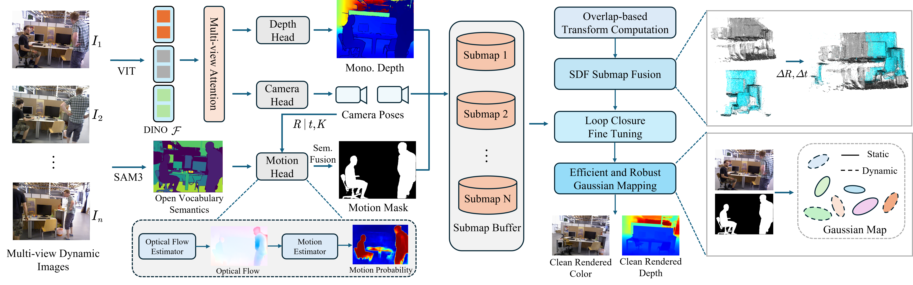

Feed-forward 3D reconstruction models have recently shown strong potential for end-to-end SLAM by enabling efficient inference without iterative optimization. In this paper, we propose an end-to-end dynamic Gaussian SLAM framework. To handle scene dynamics in a feed-forward manner, we first extend the Depth Anything V3 pipeline with motion cues via an auxiliary feed-forward motion head that operates in conjunction with the camera and depth heads, enabling dynamic segmentation without manual priors. To achieve scalable feed-forward tracking in dynamic environments, we decompose the scene into multiple submaps and introduce an overlap-based submap alignment strategy to achieve stable alignment of submaps in dynamic environments. Moreover, motion cues are leveraged to enable loop closure in dynamic scenes, enhancing global consistency under dynamic conditions. Finally, the predicted motion cues are integrated into a dynamic-aware GS-DPT module, which explicitly disentangles static and dynamic Gaussian primitives for robust scene representation. Extensive experiments demonstrate that our method achieves strong performance in both dynamic and static scenes, even without camera intrinsic calibration.

The framework of DyEG-SLAM. Given a sequence of RGB images, DyEG-SLAM jointly estimates scene depth and camera motion using multi-view attention-based depth and camera heads. Based on the inferred camera poses and depth estimates, a dedicated motion head extracts motion cues and further leverages open-vocabulary semantic information to propagate these cues into semantically refined motion masks. Incoming frames are incrementally grouped into local submaps for inference and maintained in a submap buffer, where overlap-based transformation estimation and loop closure are applied to enforce global consistency. Finally, a dynamic-aware GS-DPT module takes RGB images and semantic motion masks as input to infer Gaussian primitives with dynamic regions suppressed, which are subsequently rendered using Gaussian rasterization.
Ours
DA3